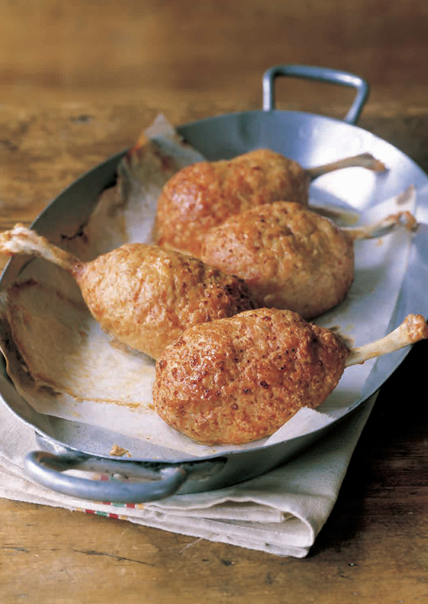

Luffys Meat on the Bone Recipe

Recreate the favorite dish from the leader of the strawhats himself: Luffys meat on the bone!
Ingredients
- 4 Chicken drumsticks
- 4 hard-boiled eggs
- 1/4 cup breadcrumbs
- 3tbsp. milk
mix
- 18 oz. (500g) ground chicken
- 1 tsp. salt
- a little black pepper
- 1 egg
- vegetable oil
Recipe instructions
- Make chicken drumstick “tulips.” Use kitchen scissors to cut the meat loose from the handle end of the drumstick. Roll the meat down the bone until it is fully inside-out at the end.
- Soak the breadcrumbs in milk. Knead mix in a bowl, then add breadcrumbs and knead again.
- Fold the meaty end of the drumstick around a hard-boiled egg. If the meat doesn't cover well enough, add cuts to loosen it up. Oil hands lightly and cover drumstick and egg with step ② breadcrumb mixture.
- Bake at 400°F (200°C) for 15–20 minutes, watching carefully.
Return to main page